WSF_LASER_TRANSCEIVER¶
- comm WSF_LASER_TRANSCEIVER¶
- comm WSF_LASER_XMTR¶
- comm WSF_LASER_RCVR¶
comm <name-or-type> WSF_LASER_TRANSCEIVER | WSF_LASER_XMTR | WSF_LASER_RCVR ... Platform Part Commands ... ... Articulated Part Commands ... ... Antenna Commands ... ... comm Commands ... ... transmitter ... standard transmitter commands ... laser transmitter commands ... end_transmitter ... receiver ... standard receiver commands ... laser receiver commands ... end_receiver ... atmospheric_structure ... attenuation ... attenuation_loss | attenuation_transmission_factor ... aero_optic_loss | aero_optic_transmission_factor ... turbulence_loss | turbulence_transmission_factor ... show_link_budget end_comm
Note
WSF_LASER_XMTR and WSF_LASER_RCVR are transmit-only and receive-only versions of WSF_LASER_TRANSCEIVER.
Overview¶
WSF_LASER_TRANSCEIVER is a laser communications model, providing simulation of acquisition times, energy propagation, data transfer rates, and ability to maintain links. The model accepts typical inputs as used in laser communications system design methodology, such that a specific top-level system design can be tested at the mission level. WSF_LASER_TRANSCEIVER is capable of both transmitting and receiving using a transmitter and receiver. If a communication device is required to transmit or receive only, the WSF_LASER_XMTR and WSF_LASER_RCVR types are available. Both of these types are special cases of the WSF_LASER_TRANSCEIVER type and therefore share the same commands that are listed below in the command section.
For a more detailed look on how this and other communications work in AFSIM, see Communications Primer.
Commands¶
Note
Many of the following commands specify fractional transmitted power, or alternatively, “losses” (db). These are specified either as fractional or db-ratio values. For fractional inputs, values should be greater than 0.0 and less than or equal to 1.0; for db-ratio inputs, values should be less than or equal to zero.
- aero_optic_loss <db-ratio-value>¶
- aero_optic_transmission_factor <real-value>¶
For laser communications devices on air platforms, specify the fraction of laser energy transmitted through turbulent air near the aircraft.
Default: 1.0 (0 db)
- atmospheric_structure <hv57>¶
Specify the atmospheric structure model, or
 function, used to compute atmospheric turbulence. It has units of
function, used to compute atmospheric turbulence. It has units of  .
.Default “hv57”
Note
Currently, only the HV 5/7 model (“hv57”) is available. More choices should be available in the future.
Note
If either turbulence_loss or turbulence_transmission_factor are specified, they will be used instead of the turbulence model.
- attenuation < attenuation_model name >¶
Reference a model (typically WSF_OPTICAL_ATTENUATION) for computing atmospheric attenuation.
Note
Attenuation can alternatively be specified in the transmitter block.
Note
If either attenuation_loss or attenuation_transmission_factor are specified, they will be used instead of the attenuation model.
- attenuation_loss <db-ratio-value>¶
- attenuation_transmission_factor <real-value>¶
Specify the fraction of laser energy transmitted through the atmosphere from transmitter to receiver.
Default: 1.0 (0 db)
Note
This input is provided to enable validation of system link budgets (see show_link_budget). Otherwise, it is preferable to use an attenuation model.
- background_radiance <spectral-radiance-value>¶
Specify a background spectral radiance at the receiver aperture (see Background Values for Wavelengths of Interest, below)
Default: 0.0 watts/meters^2/steradian/meter
Note
This command has no effect if defined in a WSF_LASER_XMTR.
- background_irradiance <spectral-irradiance-value>¶
Specify a background spectral irradiance at the receiver aperture (see Background Values for Wavelengths of Interest, below)
Default: 0.0 watts/meters^2/meter
Note
This command has no effect if defined in a WSF_LASER_XMTR.
- turbulence_loss <db-ratio-value>¶
- turbulence_transmission_factor <real-value>¶
Specify the fraction of laser energy transmitted that is not lost due to turbulence.
Default: 1.0 (0 db)
Note
If neither of these commands is specified, turbulence_loss will be calculated as the ratio of the spot size due to diffraction alone, to that due to diffraction and turbulence. The turbulent beam spread is calculated with the AFSIM turbulence model, configured with the provided atmospheric_structure .
- show_link_budget <boolean-value>¶
If enabled, print a summary link budget when a message is transmitted.
Default: disabled
Note
This command can be useful when comparing a set of inputs against a link budget for a given system design.
Transmitter Commands¶
The transmitter block includes the standard transmitter commands, plus commands that are specific to this comm device. The standard transmitter commands utilized by WSF_LASER_TRANSCEIVER follow:
wavelength - No default; must be specified.
pulse_width - No default; one of pulse_width, slot_width, or slot_rate must be specified.
attenuation_model - Specify the model for computing atmospheric attenuation (typically WSF_OPTICAL_ATTENUATION).
The following commands are specific to WSF_LASER_TRANSCEIVER:
- average_power <power-value>¶
Specify the average output power of the transmitter. The transmitter peak power will be calculated based on the modulation_type-dependent duty cycle.
- aperture_diameter <length-value>¶
Defines the aperture diameter of the transmitter. Changing this parameter controls the diffraction-induced beam spread, affecting the beam size. The larger the aperture diameter, the smaller the beam on target, and the greater the energy density (energy density ~ (aperture diameter^2)).
Default: No default. Either aperture_diameter or beamwidth is required.
Note
When calculated from beamwidth, aperture_diameter is defined to be 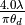, where
 is the laser wavelength, and 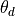 is the beamwidth.
is the laser wavelength, and 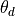 is the beamwidth.
- beamwidth <angle-value>¶
Specifies the ‘beam width’ of the the transmitted beam.
Default: No default. Either aperture_diameter or beamwidth is required.
Note
When calculated from aperture_diameter, beamwidth is defined to be 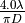, where
is the laser wavelength, and  is the aperture_diameter.
is the aperture_diameter.
- modulation_type < ook | ppm | dpsk >¶
Specify the Modulation Type to utilize when computing data transfer rate and duty cycle of the transmitter.
Default: ppm
- ppm_order <positive-integer>¶
When using the ppm modulation_type, specify the ppm order. This value must be greater than or equal to 2, and it is usually equal to a power of 2 (2, 4, 8, 16, etc.).
Default: 16
- slot_rate <frequency-value>¶
- slot_width <time-value>¶
Specify the number of communication “slots” or possible pulse widths, per second; or alternately, specify the time width of a slot. The two are reciprocals of one another.
Note
slot_width is synonymous with pulse_width; however, slot_rate is not the same as either bit rate or pulse_repetition_frequency as these both depend on the modulation_type.
- optics_transmission_factor <real-value>¶
- optics_loss <db-ratio-value>¶
Defines the fraction of the transmitted laser light that passes through the transmitter optics. This factor typically takes into account optical element transmission and reflection losses.
Default: 1.0 (0 db; no transmission loss)
- wavefront_transmission_factor <real-value>¶
- wavefront_loss <db-ratio-value>¶
Specifies the fraction of laser light that passes through a the transmitter optical path as a function of wavefront error (also, see wavefront_error)
Default: 1.0 (0 db; perfect diffraction-limited optics)
- wavefront_error <real-value>¶
Specify the wavefront error of the optical path in fractions of a wave. If this value is specified, the value for wavefront_transmission_factor will be calculated according to the equation:
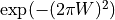
where 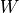 is the wavefront error.
Default: 0.0 (no wavefront error)
- pointing_transmission_factor <real-value>¶
- pointing_loss <db-ratio-value>¶
Specify the fraction of laser light transmitted after pointing errors are considered.
Default: 1.0 (0 db; no pointing error)
Receiver Commands¶
The receiver is modeled as either a PIN photodiode (with detector_gain default of 1.0), or an avalanche photodiode (with detector_gain > 1.0).
The receiver block includes the standard receiver commands, plus the following commands that are specific to this comm device:
- aperture_diameter <length-value>¶
Defines the diameter of the receiver (detector) aperture.
Default: No default. Aperture diameter is required.
- bandpass <length-value>¶
Specify the optical bandpass for transmission of light to the receiver. It will typically be a very narrow value about the wavelength of the transmitter laser wavelength.
Default: 1 nanometer
- optics_transmission_factor <real-value>¶
- optics_loss <db-ratio-value>¶
Defines the fraction of the transmitted laser light that passes through the receiver optics. This factor typically takes into account obstructions in the optical path (e.g.,a secondary mirror), and optical element transmission and reflection losses.
Default: 1.0 (0 db; no transmission loss)
- quantum_efficiency <real-value>¶
The fraction of the incident signal photons that is converted into photoelectrons.
Default: 1.0 (100% Efficient)
- responsivity <responsivity-value>¶
An alternative to quantum_efficiency, responsivity is the number of photocurrent amps generated per watt of incident power. It is related to quantum_efficiency through the relation:
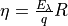,
where
 is the quantum_efficiency, 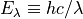 is the characteristic photon energy at laser wavelength , 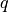 is the electron charge, and
is the quantum_efficiency, 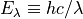 is the characteristic photon energy at laser wavelength , 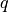 is the electron charge, and  is the responsivity,
is the responsivity,Default: (Computed from quantum_efficiency)
- detector_gain <real-value>¶
The gain of the detector.
Default: 1.0
- circuit_temperature <temperature-value>¶
- circuit_capacitance <capacitance-value>¶
- circuit_resistance <resistance-value>¶
These are optional commands used to compute the thermal noise component as described in the Computation of Noise section below. Circuit_temperature must be specified, along with either circuit_capacitance or circuit_resistance.
Default: None.
- dark_count_rate <frequency-value>¶
- dark_current <current-value>¶
These are optional commands used to specify the amplified “bulk” dark count term in background noise component as described in the Computation of Noise section below). One or the other may be specified depending on preference.
Default: None.
- excess_noise_factor <real-value>¶
For an avalanche photodiode (APD) receiver, specify the excess noise factor (gain value), due to non-ideal amplification, when computing photoelectrons from amplified noise.
Default: 1.0 (no additional effect)
- surface_dark_count_rate <frequency-value>¶
- surface_dark_current <current-value>¶
These are optional commands used to specify the non-amplified, or “surface” dark count term in background noise component as described in the Computation of Noise section below). One or the other may be specified depending on preference.
Default: None.
Note
Because surface dark current is not amplified, it can often be ignored in APD receivers with large gain.
Modulation Type¶
Modulation type determines transmitter duty_cycle and data rate throughput. Currently available modulation types are the following:
On-Off Keying (OOK): Signal photons are transmitted during a bit interval if a 1-bit is sent, while no signal photons are transmitted during a bit interval if a 0-bit is sent.
Pulse Position Modulation (PPM): For a given number of slots M, signal photons are sent during exactly one of the M slots. During each symbol period, 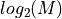 bits are transmitted. Because of this, M is usually a power of two.
Note
PPM is often referred to as M-ary PPM, or M-PPM. The case M=2 is sometimes distinguished as Binary PPM, or B-PPM.
Binary Differential Phase Shift Keying (DPSK): If a 1-bit is transmitted, the transmitter carrier phase is shifted by 180 degrees between bit intervals. If a 0-bit is transmitted there is no phase shift.
Given a defined slot_width (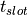), the modulation types provide the following duty cycles and data rates:
Modulation Type
Duty Cycle
Data Rate (bps)
OOK
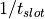
PPM
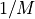
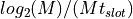
DPSK


Computation of Power Received from the Laser Pulse¶
The computation of received laser power follows the optical link equation:
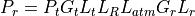
Note
The terms ‘loss` and ‘transmission factor’ are used interchangeably. Typically, ‘loss’ is used when these factors are added together in decibel form (they are negative values). The above equation does not use decibel form, but rather multiplies all terms together, in which case they are better described as ‘transmission factors’.
Where:
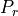
The received signal power.
The transmitted signal power.
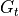
The effective transmit antenna gain.
The efficiency loss associated with the transmitter.
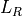
The free space range loss.
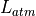
The atmospheric-related loss.
The receive antenna gain.
The efficiency loss associated with the receiver.


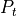 is the transmitter’s (peak) power. In the case that an average_power is defined,the transmitter power is set to:
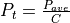
where 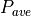 is the average_power and  is the duty cycle obtained from the modulation_type.
is the duty cycle obtained from the modulation_type.
 represents the ideal near-field intensity due to a plane wave at the transmitter:
represents the ideal near-field intensity due to a plane wave at the transmitter:
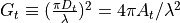
where 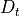 is the (circular) transmitter aperture_diameter, 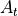 is the transmitter aperture area, and is the laser wavelength.
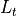, the transmission losses, occur due to optics transmission losses, obscuration, and truncation; as well as to wavefront and pointing losses:
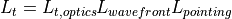
where 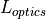 is the optics_transmission_factor, 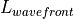 is the wavefront_transmission_factor, and 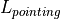 is the pointing_transmission_factor.
As noted, if a wavefront_error is specified, the wavefront_transmission_factor is calculated as follows:
where is the wavefront_error in fractions of a wave.
 is the free-space range loss, defined to be:
is the free-space range loss, defined to be:
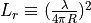
where is the range from transmitter to receiver.
 represents atmospheric attenuation (extinction), as well as losses due to turbulence and aero-optics:
represents atmospheric attenuation (extinction), as well as losses due to turbulence and aero-optics:
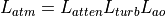
where 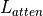 is the attenuation_transmission_factor,  is the turbulence_transmission_factor, and 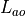 is the aero_optic_transmission_factor.
is the turbulence_transmission_factor, and 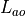 is the aero_optic_transmission_factor.
 , the receiver gain, has an identical form as the transmitter gain:
, the receiver gain, has an identical form as the transmitter gain:
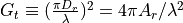
with 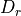 being the (circular) aperture_diameter at the receiver, and  being the associated area.
being the associated area.
, the receiver losses, occur due to optics transmission losses, obscuration, and truncation (optics_transmission_factor):
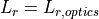
Computation of Signal¶
The average number of signal electrons is calculated from the power incident at the receiver as follows:
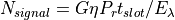
where G is the detector_gain is the quantum_efficiency of the detector,  is the slot_width, and is the characteristic photon energy at laser wavelength .
is the slot_width, and is the characteristic photon energy at laser wavelength .
Computation of Noise¶
The receiver noise comes about due to statistical fluctuations in the current. These noise sources include:
- Variations in current due to converted photons from:
Background resolved sources (e.g., stars), calculated using the background_irradiance input.
Background unresolved sources (e.g., scattered solar radiation), calculated using the background_radiance input.
The transmitter (signal photons)
Thermal (Johnson) noise, calculated using the circuit_temperature, and circuit_resistance or circuit_capacitance inputs.
Amplified (“bulk”) dark current (shot noise), calculated using the dark_count_rate or dark_current inputs.
Non-amplified (“surface”) dark current (shot noise), calculated using the surface_dark_count_rate or surface_dark_current inputs.
For all but thermal noise, these fluctuations obey Poisson statistics: they are computed assuming that the variances of the noise current sources are equal to their mean values.
Background photons incident on the detector are converted to photoelectrons in the same manner as the signal photons. Thus, the average number of photons from background sources is
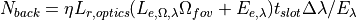
where 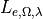 is the background spectral radiance (background_radiance), 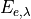 is the background spectral irradiance (background_irradiance), 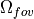 is the solid angle defined by the detector’s field of view, and 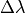 is the optical filter bandpass.
The solid angle is computed as
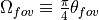,
where 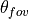 is the full field-of-view angle (assumed circular; this computation uses a small angle approximation in 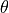).
Shot noise variance due to signal and background photocurrent is equal to the number of electrons initially produced, subject to detector_gain and excess_noise_factor:
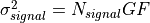
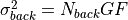
where 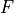 is the excess_noise_factor.
Shot noise variance due to dark current consists of amplified and non-amplified contributors:
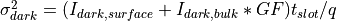
where 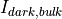, the amplified dark current, is provided by the dark_current (dark_count_rate) input, and is the non-amplified dark current given by the surface_dark_current (surface_dark_count_rate) inputs.
The thermal noise comes about due to thermal motion of electrons in a resistor. Thermal noise variance due the following:
where  is the circuit_temperature, is the circuit_resistance, and
is the circuit_temperature, is the circuit_resistance, and  is Boltzmann’s constant.
is Boltzmann’s constant.
Alternatively, the noise variance can be computed based on capacitance:
where  is the value of circuit_capacitance, and
is the value of circuit_capacitance, and  is The value of the elementary charge (charge of an electron).
is The value of the elementary charge (charge of an electron).
Computation of Signal-To-Noise¶
Defining the total noise contribution to be the square root of the sum of the noise variances:
The signal-to-noise ratio (SNR) is:
Background Values for Wavelengths of Interest¶
The following table highlights some possible values for background_radiance and background_irradiance at some characteristic laser wavelengths:
Irradiance |
||||||
|---|---|---|---|---|---|---|
Wavelength |
Solar |
Lunar |
Mercury |
Venus |
Mars/Jupiter |
Saturn |
0.53 |
1842 |
0.0027 |
1.8E-7 |
1.8e-6 |
2.8e-7 |
8.4e-8 |
0.85 |
940 |
0.0015 |
9.5E-8 |
9.0e-7 |
1.5e-7 |
4.6e-8 |
1.06 |
748 |
0.01 |
7.2E-8 |
7.1e-7 |
1.1e-7 |
3.2e-8 |
1.3 |
411 |
0.00054 |
3.7E-8 |
3.6e-7 |
5.6e-8 |
1.7e-8 |
1.5 |
204 |
0.00024 |
1.7E-8 |
1.6e-7 |
2.5e-8 |
7.5e-9 |
Radiance |
|||
|---|---|---|---|
Wavelength |
Sunlit Clouds |
Sunlit Snow / Ice |
Starfield |
0.53 |
245 |
330 |
3.0e-6 |
0.85 |
180 |
220 |
1.4e-6 |
1.06 |
120 |
190 |
1.1e-6 |
1.3 |
50 |
140 |
6.0e-7 |
1.5 |
40 |
100 |
4.0e-7 |
Note
Data from “Laser Communications in Space”, Stephen G. Lambert & William L. Casey, Artech House, 1995, p. 155.